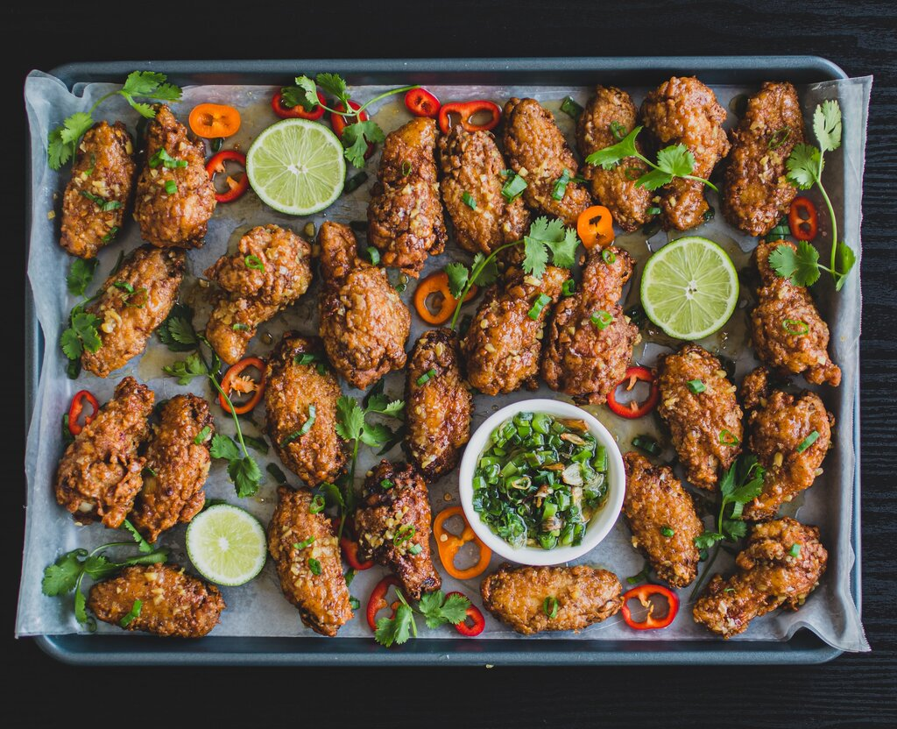

Korean Fried Chicken
The secret to the chickens incredible, light and crisp exterior comes down to two key details: the potato starch used to coat the chicken and the double-fry method. Between the delightfully crackly texture, the aromatic flavor worked into the chicken via its ginger-salt rub, and the dynamic heat of the gochujang sauce, this Korean fried chicken is guaranteed to impress.
Prep-Time:
Total: 1 hr
Serves: 6
Ingredients
Chicken
- 3 cups canola, grapeseed, or peanut oil, for frying
- 3¾ pounds chicken drumsticks OR chicken wings, tips removed and wing flats separated
- 2 tablespoons grated fresh ginger
- 2 teaspoons kosher salts
- 1 cup potato starch, divided
Sauce
- ½ cup gochujang
- ½ cup oyster sauce
- 3 tablespoons mirin (sweet sake)
- 2 tablespoons ketchup
- 1 tablespoon fish sauce
- 2 teaspoons grated garlic (about 3 garlic cloves)
- 1½ teaspoons white sesame seeds
- 1½ teaspoons black sesame seeds
Directions
- Prepare the chicken: Preheat oven to 200℉. Pour oil into a large cast-iron skillet, and fit with a candy thermometer. Heat over medium-high until thermometer reaches 375℉
- Toss together chicken, ginger, and salt in a large bowl until evenly coated. Place 1/2 cup of potato starch in a shallow dish. Working with 1 piece of chicken at a time, place in starch, and toss to coat completely and evenly. Tap off excess, and place on a baking sheet. Repeat with remaining chicken.
- When oil is ready, place about 6 pieces of chicken in hot oil; fry until lightly golden, about 2 to 3 minutes. Flip chicken, and fry another 2 to 3 minutes. Transfer to a baking sheet lined with a rack. Repeat with remaining chicken.
- When all chicken has been fried once, return chicken, in batches, back to oil to fry again, about 2 minutes per side. Place finished chicken on a separate baking sheet lined with a wire rack, and place in preheated oven to keep warm. Repeat with remaining chicken.
- Prepre the sauce, stir together gochujang, oyster sauce, mirin, ketchup, fish sauce, and garlic in a medium bowl. Toss chicken with desired amount of sauce, serve immediately. Sprinkle with sesame seeds.